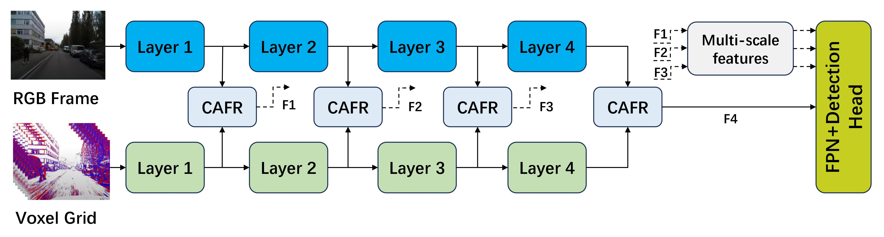
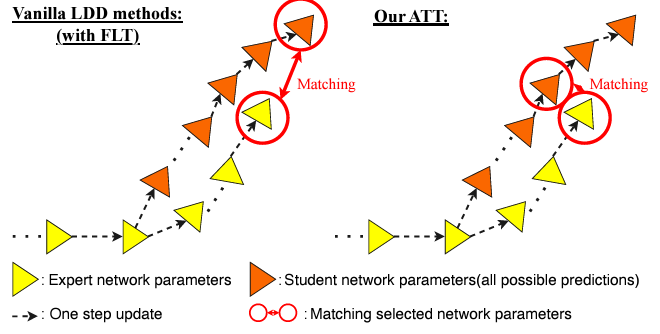
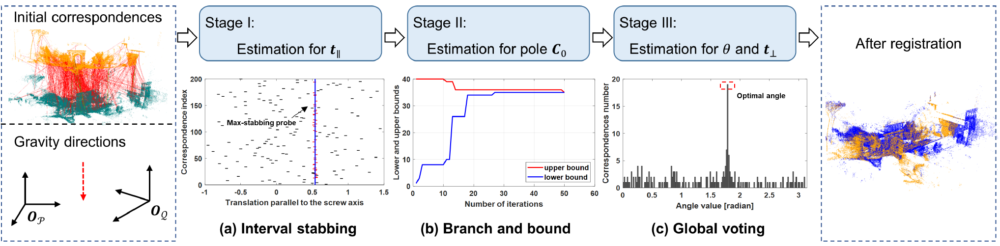
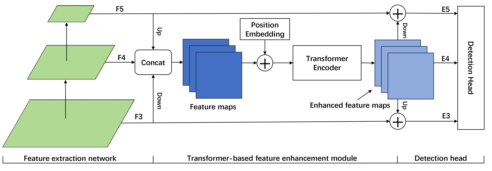
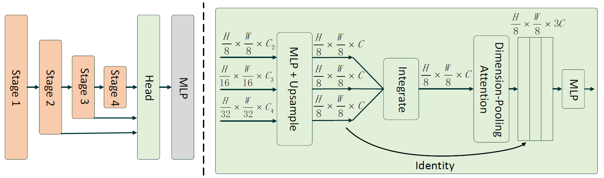
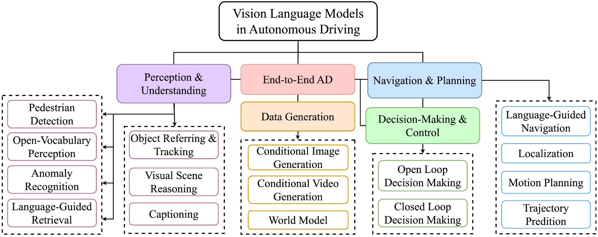
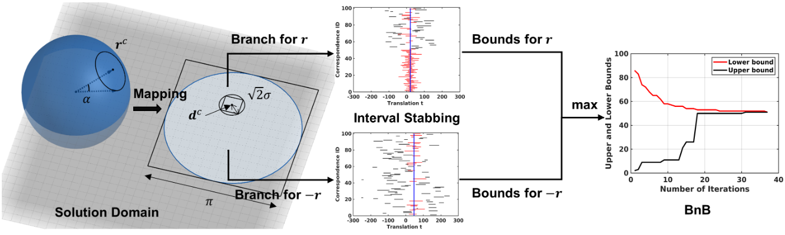
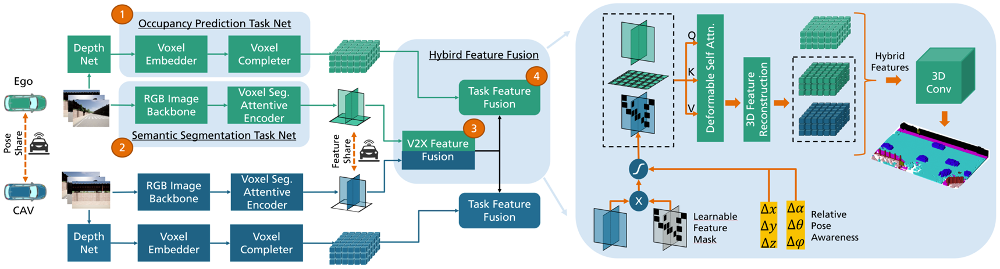
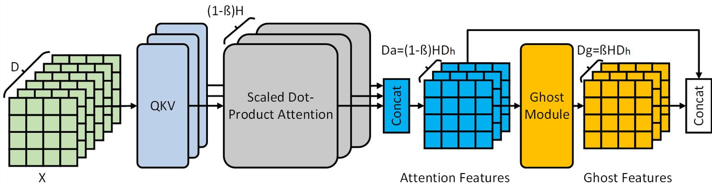
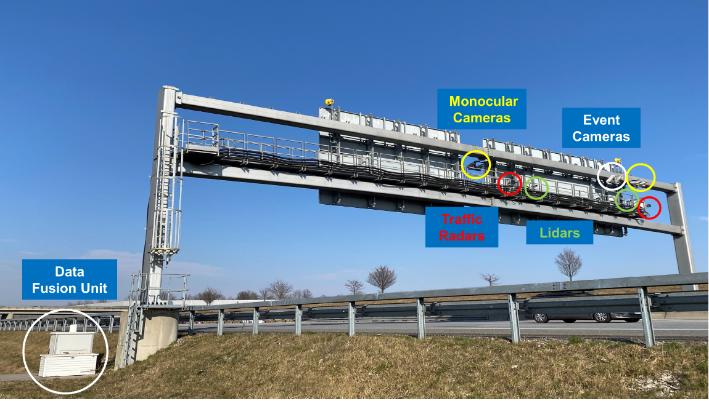

Autonomous driving
( † indicates equal contribution, * indicates corresponding author, # indicates project lead)





Transformation Decoupling Strategy based on Screw Theory for Deterministic Point Cloud Registration with Gravity Prior
IEEE Transactions on Pattern Analysis and Machine Intelligence (JCR Q1, SCI-I, CCF-A), 2024
 [4DOF-Registration]
[4DOF-Registration]

Lightweight Fisheye Object Detection Network with Transformer-based Feature Enhancement for Autonomous Driving
IEEE/RSJ International Conference on Intelligent Robots and Systems (IROS), 2024





Efficient and Deterministic Search Strategy Based on Residual Projections for Point Cloud Registration with Correspondences
IEEE Transactions on Intelligent Vehicles (JCR Q1, SCI-I), 2024



GhostViT: Expediting Vision Transformers via Cheap Operations
IEEE Transactions on Artificial Intelligence, 2023
 [paper]
[paper]


Globally Optimal Robust Radar Calibration in Intelligent Transportation Systems
IEEE Transactions on Intelligent Transportation Systems (JCR Q1, SCI-I), 2023


Event-based neuromorphic vision for autonomous driving: a paradigm shift for bio-inspired visual sensing and perception
IEEE Signal Processing Magazine (JCR Q1, SCI-I), [IEEE Xplore Innovation Spotlight] , 2020